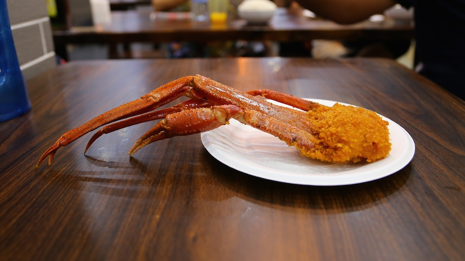
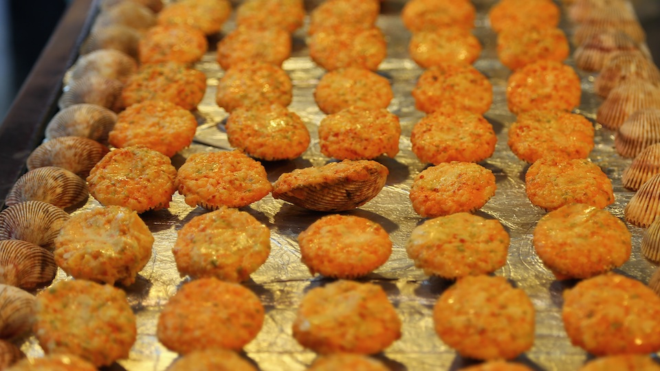
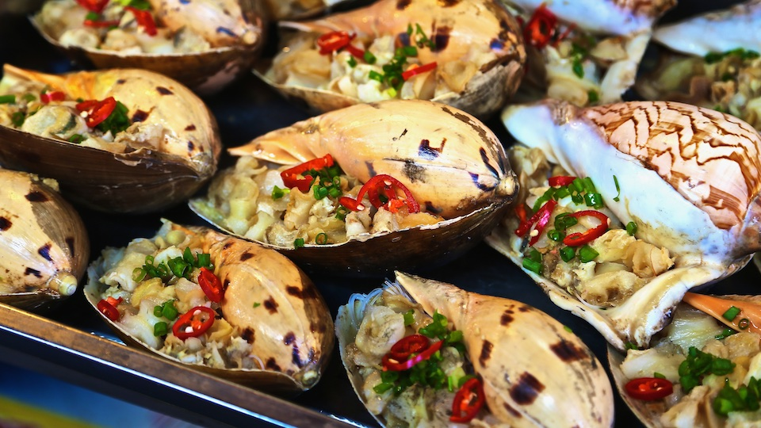

海边城市的小吃街总是相似的，不外乎是各种炸的烤的海鲜。很早就听说厦门的土笋冻，里面也有广东地区的酒宴圣品——沙虫。这次来路过好几次，最终还是没尝试。之前看厦门土笋冻的制作视频，和广东地区打理沙虫的精细不同，厦门的土笋冻制作对付沙虫真是简单粗暴，一堆往地上一扔，用类似压路机一样的工具碾过，原本满肚沙子鼓鼓的沙虫就被压扁了，沙也跟着排了出来，只是总觉得沙子肯定排不干净，那沙虫皮应该也会“啵”一声爆裂开来，还好沙虫没血，不然大概会是血花四溅，血流成河的景象。看完那个视频后，就再也没有品尝土笋冻的冲动了。



鼓浪屿上黄老伯的海蛎煎鼎鼎有名，很多人慕名而来，据说是古法制作，料最足的海蛎煎。黄老伯60多岁，老伴是上海人，两人的爱情故事写在每张菜单的背面。黄老伯做海蛎煎的时候，黄太太就在一旁打下手，点单，送菜，忙前忙后，脸上是平淡的幸福，遇到江浙一带来的游客，还不忘用上海话攀谈几句。